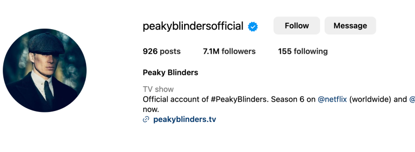

All
Maps
Books
flights
Cast
About
8.8/10
IMDb
93%
Rotten Tomatoes
Tommy Shelby, a dangerous man, leads the Peaky Blinders, a gang based in Birmingham. Soon, Chester Campbell, an inspector, decides to nab him and put an end to the criminal activities.
Directors: Otto Bathurst (series 1), Tom Harper (series 1), MORE
Budget: $1.5 million per episode
Executive producers: Caryn Mandabach; Greg Brenman; Steven
Knight; Cillian Murphy; Jamie Glazebrook; Frith Tiplady
Genre: Historical fiction; Crime drama; Psychological thriller
No. of series: 6
Opening theme: "Red Right Hand" by Nick Cave and the Bad Seeds
Wikipedia
Peaky Blinders
The Peaky Blinders were a street gang based in Birmingham, England, which operated from the 1880s until the 1910s. The group consisted largely of young ...
Instragam
Peaky Blinders (@peakyblindersofficial)
Official account of #PeakyBlinders. Season 6 on @netflix (worldwide) and @bbciplayer (UK) now. peakyblinders.tv. Shop's profile picture.

Instragam
Peaky Blinders (@peakyblindersofficial)
Official account of #PeakyBlinders. Season 6 on @netflix (worldwide) and @bbciplayer (UK) now. peakyblinders.tv. Shop's profile picture.
Instragam
Peaky Blinders (@peakyblindersofficial)
Official account of #PeakyBlinders. Season 6 on @netflix (worldwide) and @bbciplayer (UK) now. peakyblinders.tv. Shop's profile picture.
Instragam
Peaky Blinders (@peakyblindersofficial)
Official account of #PeakyBlinders. Season 6 on @netflix (worldwide) and @bbciplayer (UK) now. peakyblinders.tv. Shop's profile picture.
Instragam
Peaky Blinders (@peakyblindersofficial)
Official account of #PeakyBlinders. Season 6 on @netflix (worldwide) and @bbciplayer (UK) now. peakyblinders.tv. Shop's profile picture.